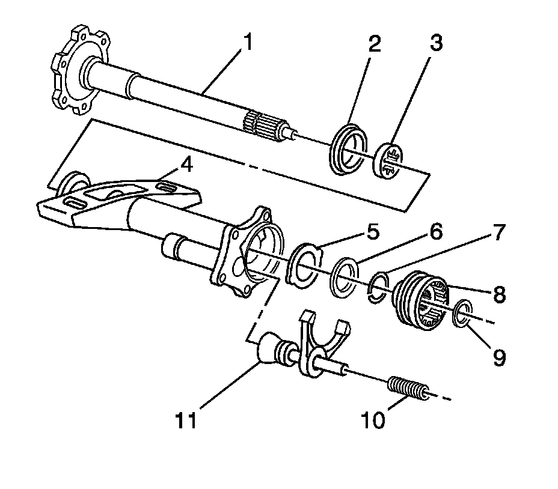
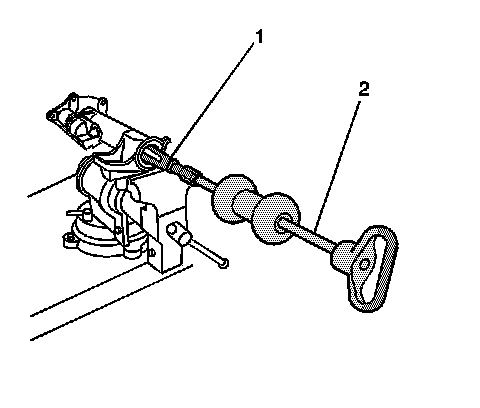
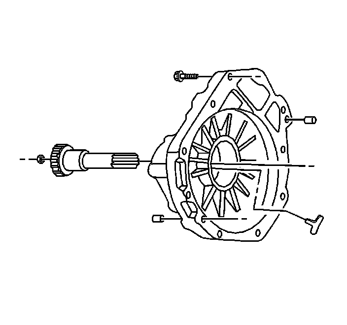
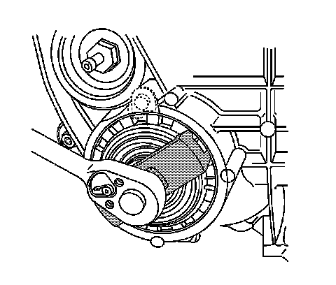
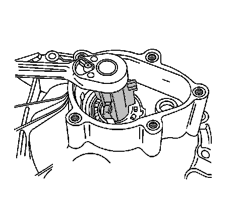
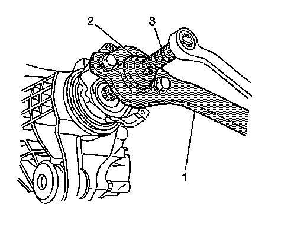

Differential Carrier Assembly Disassemble (9.25 Inch Axle)
Differential Carrier Assembly Disassemble (9.25 Inch Axle)
Tools Required
^ J 22912-B Split-Plate Bearing Puller
^ J 2619-01 Slide Hammer
^ J 29369-2 Bushing and Bearing Remover (2-3 in)
^ J 33791 Carrier Bushing Remover/Installer
^ J 34011 Pilot Bearing Remover
^ J 36599-A Side Bearing Nut Wrench
^ J 36615 Side Bearing Nut Wrench
^ J 36616 Axle Mount Bushing Remover/Installer
^ J 45754 Pinion Bearing Race Remover/Installer - 9.25 inch Axle
^ J 45765 Pinion Remover
^ J 8614-01 Flange and Pulley Holding Tool
Inspection Procedure
Perform the following before disassembling the axle:
1. Remove the fill plug from the axle.
2. Remove the drain plug from the axle.
3. Drain the axle lubricant.
4. Inspect the oil and the case for metal chips.
Determine the source of the metal chips, such as a broken gear or bearing cage.
5. Check the ring gear backlash. Refer to Backlash Inspection and Adjustment.
This information can be used in order to determine the cause of the axle problem. The information will also help when setting up and preloading the differential case.
Determine the cause of the axle problem before disassembly, if possible.
Disassembly Procedure

1. Remove the upper differential carrier assembly bushing by performing the following steps:
1. Install the J 36616-2 (1), the J 33791-1 (2), the thrust bearing (3), the J 21474-18 (4), and the forcing screw as shown.
2. Remove the upper differential carrier assembly bushing by holding the forcing screw and tightening the J 21474-18.

2. Remove the lower differential carrier assembly bushing by performing the following steps:
1. Install the J 21474-18 (1), the thrust bearing (2), the J 33791-1 (3), the J 36616-2 (4), and the forcing screw as shown.
2. Remove the lower differential carrier assembly bushing by holding the forcing screw and tightening the J 21474-18.
3. Remove the front axle actuator.
4. Remove the inner axle shaft housing to differential carrier assembly bolts.

5. Carefully remove the inner axle shaft housing with the inner axle shaft and clutch fork components from the differential carrier assembly.

6. Remove the following components from the inner axle shaft housing (4):
1. The clutch fork inner spring (10)
2. The clutch fork assembly (11)
3. The clutch shaft shim (9)
4. The clutch shaft sleeve (8)
5. The retainer ring (7)
6. The thrust washers (5, 6)

7. Remove the inner axle shaft (2).

8. Remove the inner axle shaft bearing and the inner axle shaft seal by performing the following steps:
1. Install the inner axle shaft housing into a vise.
Clamp only on the mounting flange of the inner axle shaft housing.
2. Install the J 29369-2 (1) behind the inner axle shaft bearing.
9. Install the J 2619-01 (2) to the J 29369-2 (1).
10. Remove the inner axle shaft bearing and the inner axle shaft bearing and the seal using the J 2619-01.
11. Remove the inner axle shaft housing from the vise.
12. Remove the front drive axle clutch shaft.
13. Use the J 34011 in order to remove the clutch shaft bearing.

14. Place the differential carrier assembly into a vise.
Clamp only on the mounting flange of the differential carrier assembly case.
15. Remove the inner axle shaft using a hammer and a brass drift.
16. Install the J 29369-2 (1) behind the inner axle shaft bearing.
17. Install the J 2619-01 (2) to the J 29369-2 (1).
18. Remove the inner axle shaft bearing and the inner axle seal bearing and the seal using the J 2619-01.
19. Remove the differential carrier assembly from the vise.

20. Remove the vent connector.
21. Remove the differential carrier assembly bolts.

22. Separate the left carrier case half from the right carrier case half by tapping on the on the carrier case with a hammer and a brass drift.
23. Remove the differential case assembly.
Disconnect the right side differential bearing adjuster nut lock from the differential bearing adjuster nut by prying up on the lock.
24. Remove the left side differential bearing adjuster nut lock and the bolt.

25. Remove the left side differential bearing adjuster by doing the following:
1. Install the J 36615 onto the differential bearing adjuster nut as shown.
2. Turn the J 36615 counterclockwise in order to remove the differential bearing adjuster nut and the O-ring.

26. Remove the right side differential bearing adjuster by doing the following:
1. Install the J 36599-A onto the differential bearing adjuster nut.
2. Turn the J 36599-A clockwise in order to push the bearing cup out of the bore.
27. Remove the right side differential bearing adjuster nut sleeve using a hammer and brass drift.

28. Install the J 8614-01 as shown.
Remove the pinion nut while holding the J 8614-01.
29. Remove the washer.

30. Install the J 8614-2 (2) and the J 8614-3 (3) into the J 8614-01 (1) as shown.
31. Remove the pinion yoke by turning the J 8614-3 (3) clockwise while holding the J 8614-01 (1).
32. Install the J 45765 to the left side differential carrier case half over the drive pinion as shown.
33. Turn the forcing screw of the J 45765 clockwise to remove the following components from the left side differential carrier case half:
^ The drive pinion gear
^ The pinion gear selectable shim
^ The inner pinion bearing
^ The collapsible spacer
34. Remove the drive pinion seal using a suitable seal remover.
35. Remove the outer pinion bearing from the differential carrier case half.
36. Install the J 45754-3 over the inner pinion bearing cup.
37. Install the forcing screw (1) of the J 45754 into the J 45754-3 (2).
38. Drive out the inner pinion bearing cup by pounding on the forcing screw with a hammer.

39. Install the J 45754-2 (2) and the forcing screw (1) over the outer pinion bearing cup bore.
40. Install the J 45754-4 (3) into the pinion bearing bore behind the outer pinion bearing cup.
Slowly turn the forcing screw (1) until the J 45754-4 is evenly seated behind the outer pinion bearing cup bore and the J 45754-2 (2) is evenly seated over the outer pinion bearing cup bore.
41. Remove the outer pinion bearing cup by turning the forcing screw clockwise.

42. Install the J 22912-B between the pinion bearing and the drive pinion.
43. Remove the inner pinion bearing using the J 22912-B and a hydraulic press.
44. Remove the pinion gear selectable shim.